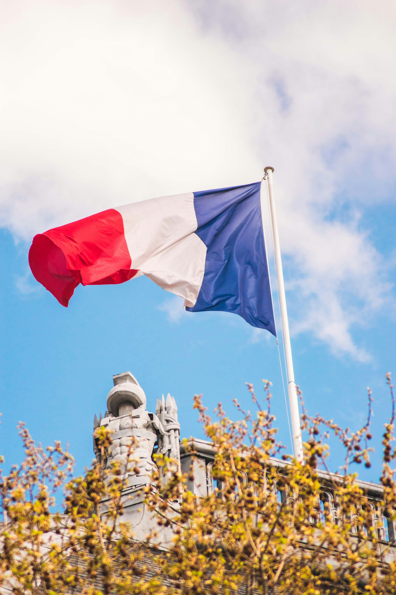

French culture is world renowned for its rich literature, artistic expression, and the famous language. From the historic paintings of Montmartre to the rhythmic beauty of the French language, the French culture is a powerful cornerstone of its people. To truly explore France and to experience the true beauty of its people, customs and traditions, we must first delve into the incredible and historic culture present amongst the people of France. In this guide, we will uncover this breathtaking culture, as we dive into French Art, media and music, the historic and lasting French traditions, the everyday customs of the French people, as well as the language itself which is spoken in many corners of the world. To explore, please select an option below or scroll at your leisure through this guide of France’s incredible culture.
On the world stage, France is famous for its incredible works of art, abstract cinema, and distinct music.
Click a card below to exlore more!
Spoken by over 300 million people across five continents, the French language is a cornerstone of France's national identity and global cultural influence. Known for its melodic rhythm, rich literary heritage, and role as an official language of international diplomacy, French reflects centuries of history, art, and tradition. Whether greeting a local baker with a polite Bonjour or exploring regional dialects from Brittany to Provence, understanding the language offers an authentic window into everyday French life.
| Phrase | French translation | Audio |
|---|---|---|
| Hello | Bonjour | |
| My Name Is | mon nom est | |
| Where do you live? | où habites-tu |
France's national holiday celebrated every July 14th, marking the 1789 storming of the Bastille with military parades down the Champs-Élysées, firemen's balls, and fireworks across the country.

An essential daily ritual where friends gather at outdoor sidewalk cafés in the late afternoon for l'apéro (pre-dinner drinks and light snacks) to unwind and socialize before evening meals

Politeness is central to French social life, every interaction begins with a warm Bonjour while friends and family greet each other with la bise (light cheek kisses).

Held every year on June 21st for the summer solstice, amateur and professional musicians fill streets, squares, and parks across every French town with free live concerts.

Celebrated every January for Epiphany, families share a golden puff-pastry almond cake hiding a tiny figurine (la fève) whoever finds it in their slice wears the paper crown for the day.

Below are three questions, please awnser each question and tap submit to test your knowledge and get your score
From timeless cinema and chanson to everyday café culture and warm greetings, French culture is best experienced through its art, language, and daily traditions. Feel free to explore the rest of our site to discover more of what France has to offer and get that trip booked!
🧳Happy travels✈️